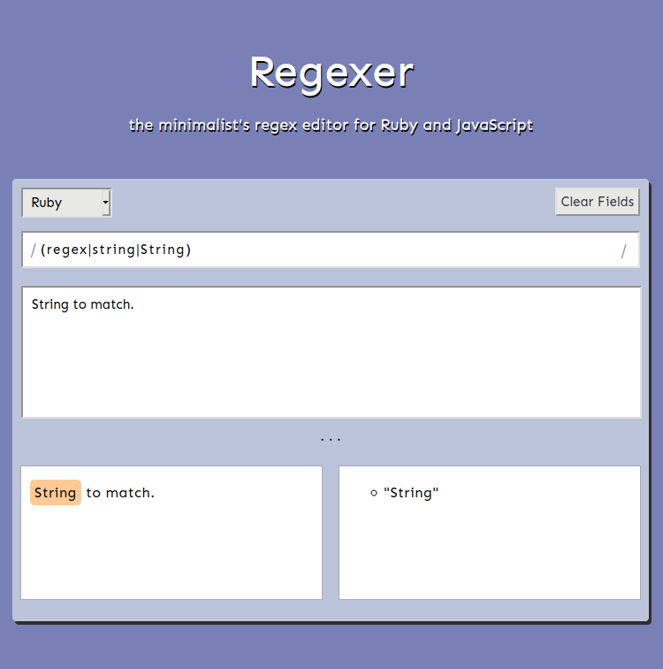

Jordan Moore
I'm a software engineer in Croton-on-Hudson, NY who builds containerized backend systems.
I recently co-founded Satellite, an open source, multi-instance, GraphQL backend-as-a-service that makes it easy for front-end developers to build and deploy applications.
Satellite is an open source, GraphQL backend-as-a-service that makes it easy for frontend developers to build and deploy applications. Satellite is built with Node.js, Docker, Nginx, and Dgraph, and uses Kubernetes in a multi-instance, container-orchestrated infrastructure.
Satellite offers an easy-to-use GUI and automatically provides a GraphQL API to power your application.
View Case StudyOther projects
-
DS-Plus
An NPM package that provides JavaScript users with non-native data structures, like AVL Trees, Graphs, and Linked Lists.
-

Regexer
An application that allows users to evaluate regex expressions in JavaScript and Ruby.